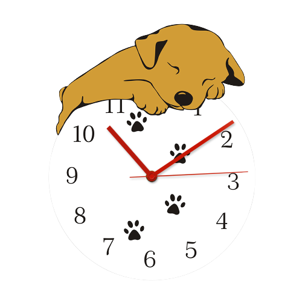

Rua José Manuel Máximo, 17, Campo Grande - RJ- Brasil
Seja Muito Bem Vindo Ao Nosso Site VetCam,
Um conceito totalmente novo em clínica veterinária, localizada em Campo Grande no Rio de Janeiro, estamos preparados com um corpo clínico especialista em mais de 15 áreas para atender o seu PET com cuidado que ele merece, seja ele um cãozinho, gatinho, aves ou animais silvestres!
Você pode agendar sua consulta conosco em FALE CONOSCO ou por meio das nossas redes sociais, somos uma clínica completa e responderemos o mais rápido possível, todas as especialidades e serviços você encontra em um único lugar,venha nos conhecer e traga seu pet <3
Nossos Serviços
Fale Conosco
Curiosidades Pet

FUNCIONAMOS TODOS OS DIAS
08:00 - 18:00hrs
(ordem de chegada)